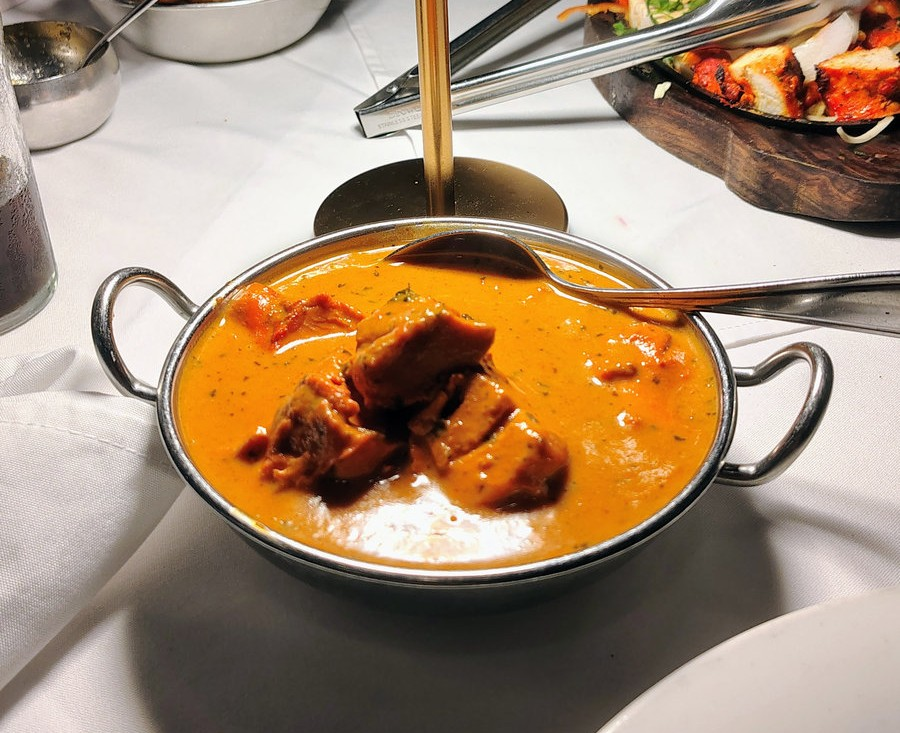
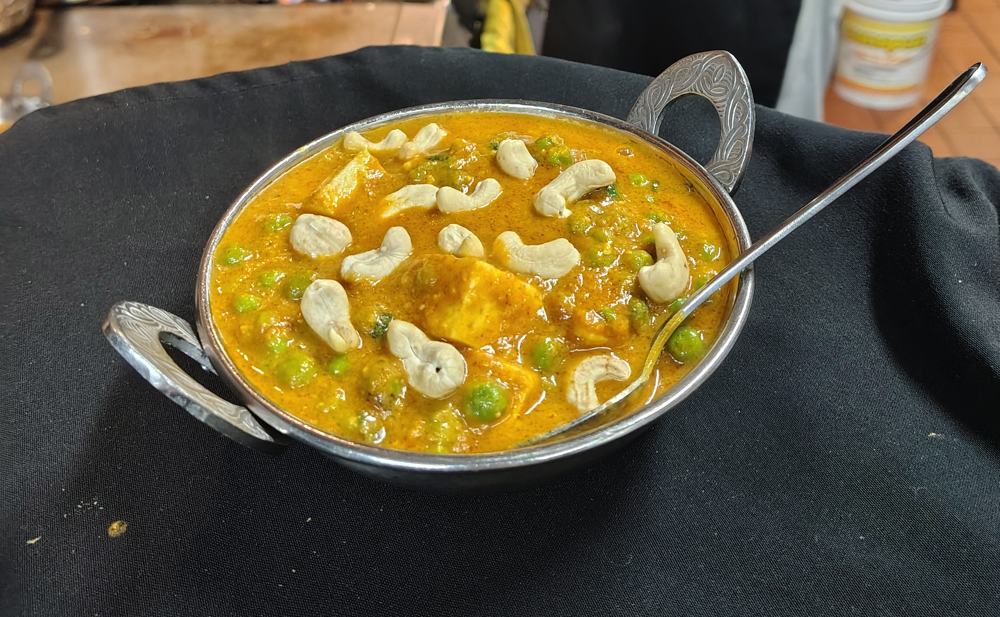
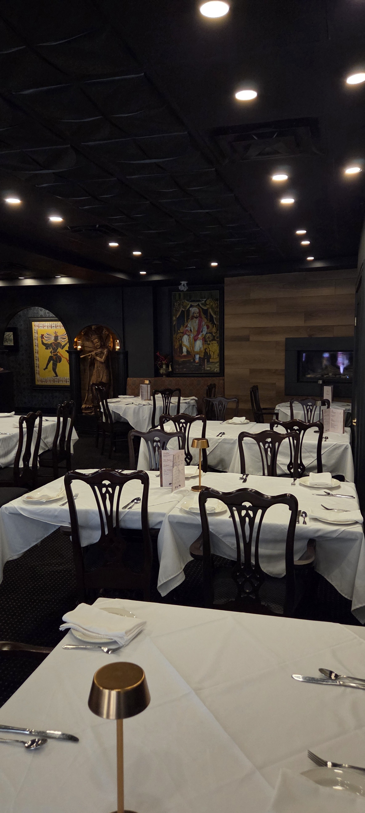
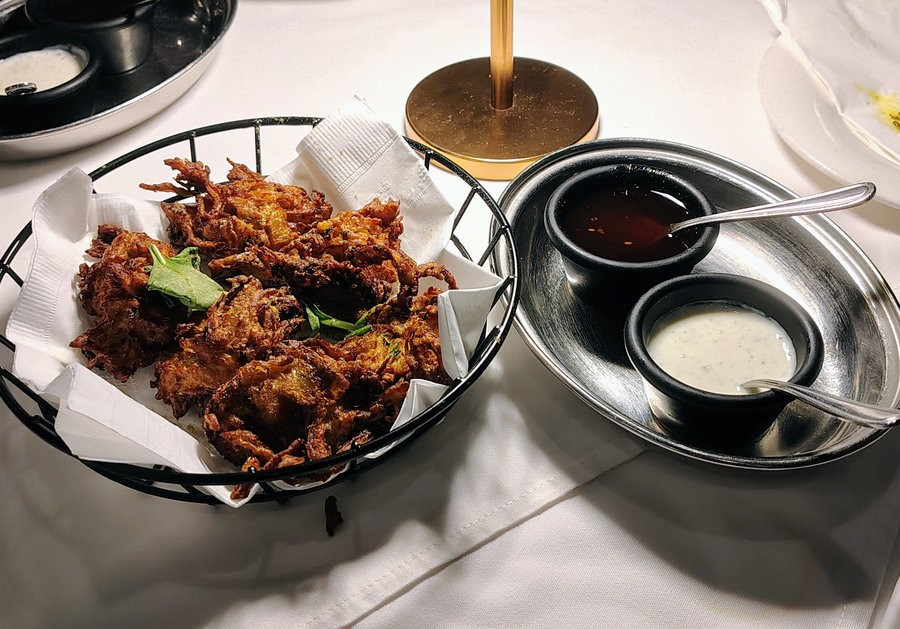
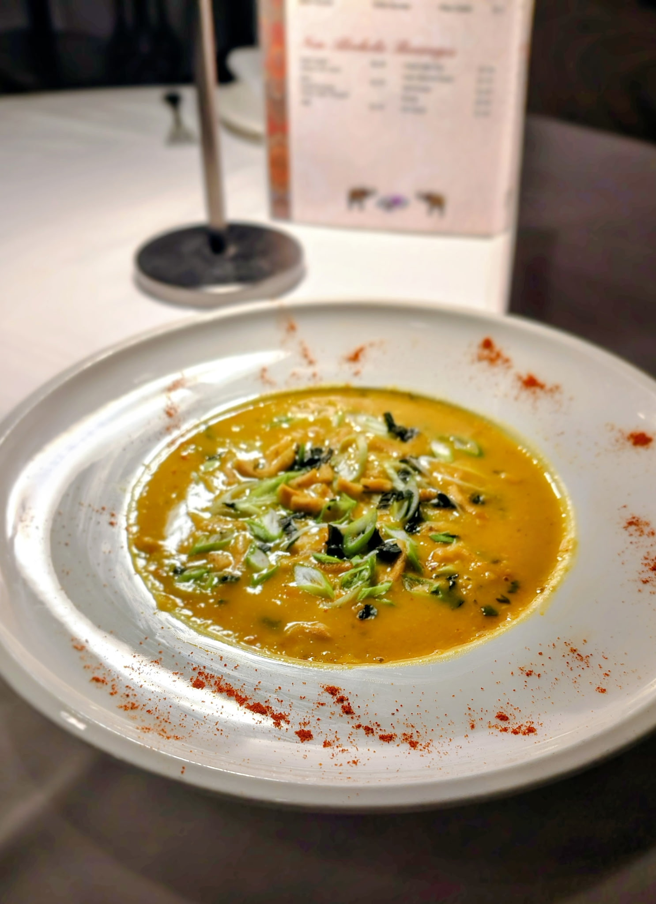
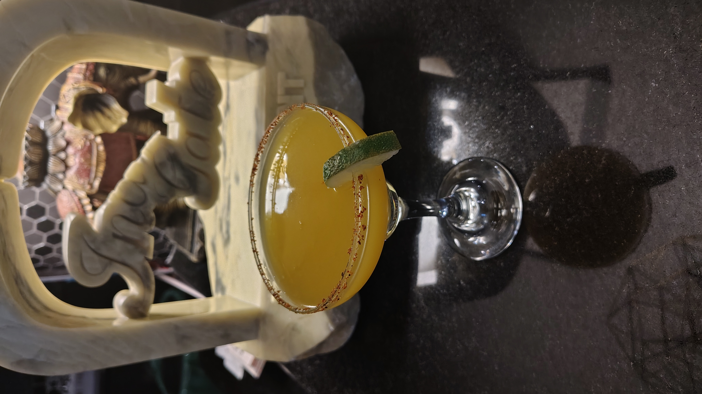
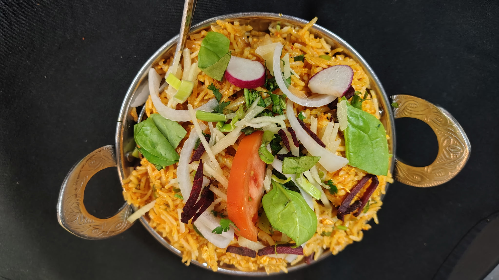
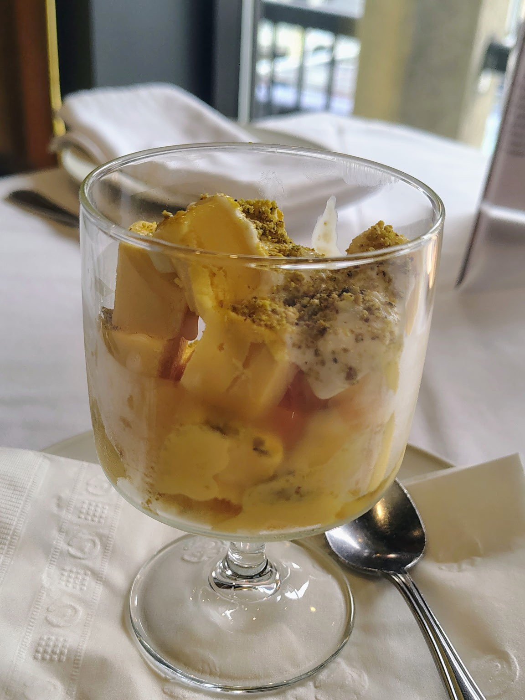

AUTHENTIC INDIAN CUISINE
WELCOME TO

At India Gate, we bring the rich flavours of India to St. John's with authentic recipes, fresh ingredients, and warm hospitality. Whether you're joining us for a family dinner or celebrating a special occasion, every meal is prepared with passion and tradition.

Tender chicken simmered in our rich, creamy tomato sauce with authentic Indian spices.

Soft cubes of paneer cheese and tender green peas simmered in a rich, aromatic tomato and spice curry.

Freshly baked in our traditional tandoor, brushed with butter and topped with fragrant garlic and fresh herbs.
Established in 1991, India Gate is one of the oldest and most beloved dining establishments in St. John's, Newfoundland.
What began as a small family-run restaurant has grown into a local favourite, known for authentic Indian cuisine, warm hospitality, and a welcoming atmosphere.
Many of our long-time staff have been with us for years, creating a sense of familiarity and consistency that guests return for time and time again.
At India Gate, we believe great food brings people together — and every dish we serve carries that tradition forward.






286 Duckworth Street
St. John's, NL
(709) 753-6006
info@indiagate.ca
Monday – Sunday
4:30 PM – 9:00 PM